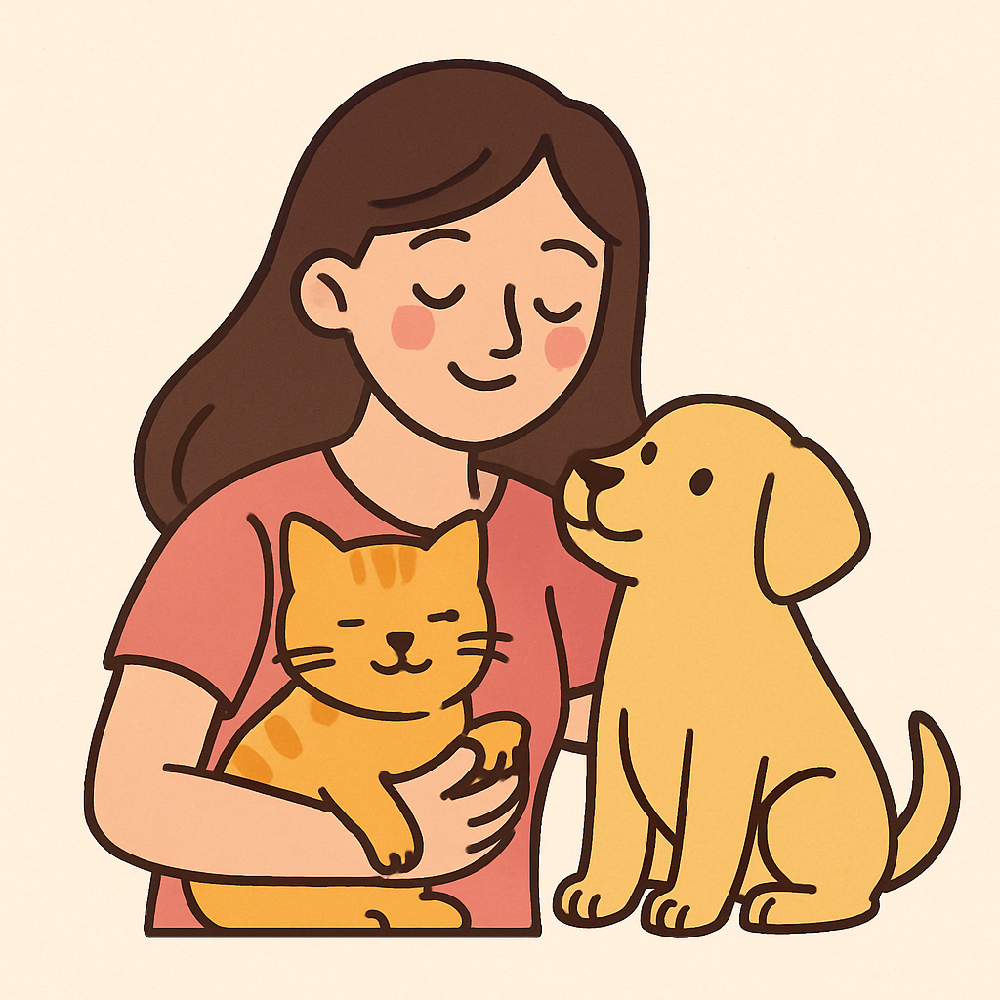

Sobre o Projeto
O PetRescue é um projeto criado com o coração, movido pela empatia e pelo amor incondicional que os animais nos oferecem todos os dias. Ele nasceu da profunda vontade de transformar a realidade de cães e gatos que foram abandonados, negligenciados ou que simplesmente nunca tiveram a chance de viver em um lar cheio de carinho. Infelizmente, o abandono de animais é uma realidade persistente em muitas cidades. São milhares de pets vivendo nas ruas, enfrentando fome, frio, medo e doenças, ou sobrevivendo em abrigos superlotados, onde recebem o básico, mas nem sempre têm a visibilidade necessária para encontrar um novo lar. Pensando nisso, o PetRescue surgiu com um propósito claro: ser um elo de esperança entre esses animais e as pessoas dispostas a oferecer uma segunda chance. Nosso objetivo é proporcionar uma plataforma simples, acessível e acolhedora, onde os animais resgatados possam ser vistos como realmente são: vidas únicas, com histórias, medos, carências e muito amor para dar. No PetRescue, cada pet tem espaço para ser apresentado com carinho, com informações como idade, porte, temperamento, histórico e condição de saúde. Isso torna o processo de adoção mais consciente, mais humano, mais responsável — tanto para quem adota quanto para o animal que será adotado. Mais do que facilitar a adoção, queremos promover a reflexão e a mudança de atitude. Acreditamos que a adoção é um ato de amor, mas também de compromisso, responsabilidade e respeito. Um animal adotado não é apenas um "bichinho de estimação", mas sim um novo membro da família, que merece cuidados, atenção, paciência e carinho por toda a vida. O PetRescue também tem como missão educar e inspirar. Queremos incentivar práticas como a castração, o cuidado contínuo com a saúde dos pets, a denúncia de maus-tratos e, principalmente, a adoção consciente como um caminho real para combater o abandono e o sofrimento animal. Cada adoção é uma vida salva, uma história reescrita, uma nova chance de felicidade para quem adota e para quem é adotado. Se você chegou até aqui, é porque se importa. E só isso já faz toda a diferença. Acreditamos que pessoas que se importam têm o poder de transformar o mundo. E você pode começar com um pequeno gesto: adotar, divulgar, apoiar, cuidar, acolher. O PetRescue é mais do que uma vitrine de adoção. É um movimento, uma comunidade, uma iniciativa de transformação. Com cada animal adotado, damos um passo rumo a um mundo mais amoroso, mais justo e mais solidário para todos os seres vivos. Adotar é salvar uma vida. E toda vida importa. 💛🐾.
Nossa Missão
Nossa missão é clara: conectar animais resgatados a pessoas com disposição para amar, cuidar e transformar vidas. Mais do que um simples canal de adoção, queremos ser agente de transformação na forma como a sociedade enxerga os animais.
Acreditamos que cada vida importa. Por isso, todos os animais listados no PetRescue são apresentados com carinho e atenção. Você encontrará informações detalhadas sobre eles — idade, porte, personalidade, comportamento, necessidades especiais, histórico e condição de saúde. Tudo isso para garantir que o processo de adoção seja consciente, respeitoso e duradouro.
Por que Adotar?
Adotar é um ato de amor, mas também de responsabilidade. Quando você escolhe adotar, está dizendo sim para o respeito à vida, para a empatia e para a construção de um mundo mais justo. Está dizendo não ao comércio de animais e ao abandono. Está oferecendo um lar para um ser que, apesar de tudo o que passou, ainda tem amor de sobra para dar.
Mas adotar também é assumir um compromisso. Um animal precisa de tempo, paciência, atenção veterinária, alimentação adequada e, acima de tudo, amor constante. Por isso, no PetRescue, incentivamos não apenas a adoção, mas a adoção responsável — aquela que transforma e salva vidas, tanto do pet quanto do tutor.
O Que Você Encontra Aqui
O PetRescue foi desenvolvido para ser fácil de navegar, direto ao ponto e visualmente acolhedor. Aqui você encontra:
- 🐾 Perfis de animais disponíveis para adoção
Com fotos, descrições completas e status de saúde. - ❤️ Histórias de superação
Mostrando como a adoção pode mudar vidas. - 📝 Dicas para novos tutores
Desde como preparar sua casa até como lidar com os primeiros dias de adaptação.
Um Movimento de Amor
O PetRescue não é apenas um projeto — é um movimento de amor e empatia. Queremos inspirar mais pessoas a enxergar os animais com o respeito que eles merecem, a se envolver em causas de proteção animal, a apoiar quem luta diariamente pelo bem-estar desses seres tão leais e sensíveis.
Cada adoção realizada aqui é uma história reescrita. É um animal que sai da solidão e encontra uma família. É um humano que ganha um companheiro fiel e uma nova razão para sorrir. É um final feliz construído com gestos simples, mas cheios de significado.
Você Também Faz Parte Dessa Mudança
Se você chegou até aqui, é porque se importa. E isso já te torna parte da mudança que queremos ver no mundo. Seja adotando, divulgando, oferecendo lar temporário ou simplesmente compartilhando uma história, você está ajudando a transformar vidas.
O PetRescue acredita que juntos podemos construir uma sociedade mais consciente, empática e responsável com os animais. A cada adoção, damos um passo em direção a esse futuro. E ele começa com atitudes como a sua.
Adotar é salvar. Adotar é amar. Adotar é transformar
Escolha mudar uma vida. Escolha fazer parte do PetRescue. 🐶🐱💛
Como Funciona o PetRescue
O PetRescue foi criado para facilitar o encontro entre animais resgatados e pessoas dispostas a adotá-los com responsabilidade e carinho. Tudo é pensado para ser simples, direto e acessível:
- Acesse os perfis disponíveis: Navegue pela lista de pets resgatados e veja fotos, informações sobre idade, porte, temperamento, estado de saúde e muito mais.
- Escolha com consciência: Leia com atenção os detalhes de cada animal para encontrar aquele que combina com seu estilo de vida e ambiente.
- Entre em contato: Ao encontrar um pet que deseja adotar, você será direcionado para os responsáveis pelo animal (ONGs ou protetores) para iniciar o processo de adoção.
- Adote com amor e responsabilidade: Após a entrevista e aprovação, o pet será entregue para você iniciar uma nova jornada cheia de carinho e cuidado.
Além disso, o site oferece informações educativas e dicas importantes para garantir que a adoção seja um ato consciente e duradouro.